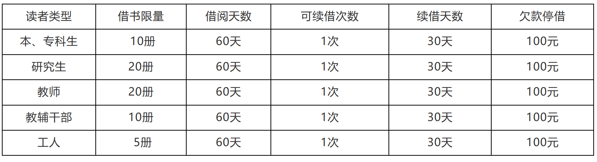

|
|
|
|
陋室书轩借阅证管理
陋室图书馆借阅证包括：有效的校园卡、图书馆发放的有效期限内的各类借阅证。
一、借阅证的办理
1. 本校中事业编制及人事代理编制的教职工和学校按照“国家普通高校招生任务”招收的本专科生、研究生，凭学校发放的本人校园卡即可到图书馆借阅图书；
二、借阅证的使用
1. 有效的校园卡借阅证是读者进入图书馆以及在馆内借阅文献，进行学习活动的凭证，读者进入图书馆时应随身携带，按规定使用，并自觉接受工作人员的检查；
2. 校园卡借阅证只限本人使用，不得抵押、转借。借用或冒用他人校园卡借书证，一经发现即扣留该证，并区别不同情况给予停借处罚；
3. 如有恶意使用他人校园卡借阅证者（如偷、捡别人借阅证使用），将给予严肃处理，暂停其借阅权六个月以上，直至最终取消其借阅权，并通报有关单位；
4. 校园卡借书证只可在有效期内使用，过期失效；
5. 各类读者利用图书馆的权限可见读者借阅权限表。
三、借阅证的挂失及补办
校园卡丢失后，请到校园卡管理室按有关规定办理挂失补办, 补办后将自动开通借阅功能。
四、退证及离校
1. 读者离开学校前（包括毕业离校、工作调动、休学、退学、离职、进修结业等）须将所借图书全部归还，并到办证处办理注销手续，方可办理离校手续；
2. 读者离校时如不按规定到图书馆办理还书退证手续，由主管单位或担保人负责追回图书或承担赔偿。
五、借书权限

|
| |
|
| |